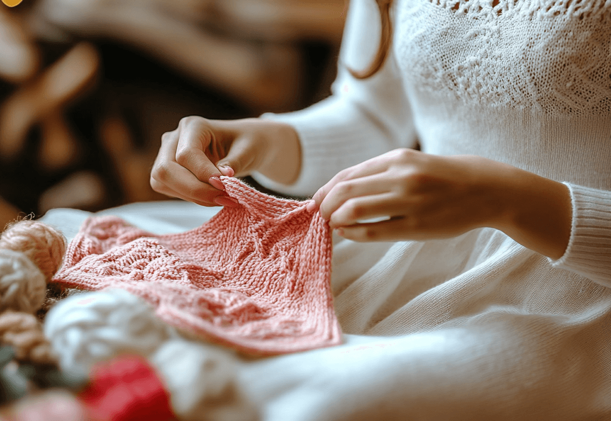

Вязание: искусство создания своими руками
Приглашаем на вебинар по вязанию!
Дорогие любители рукоделия! Приглашаем вас на уникальный вебинар, посвященный искусству вязания. На этом мероприятии вы откроете для себя удивительный мир создания красивых и практичных вещей своими руками.
Дата и время:
15 ноября 2023 года, 18:00 по московскому времени
Что вы узнаете на вебинаре:
- Основные техники вязания для начинающих
- Как правильно подбирать пряжу и инструменты
- Секреты создания аккуратных и профессиональных изделий
- Как читать схемы и понимать условные обозначения
- Идеи для первых проектов: от простого к сложному
Вебинар проведет опытная мастерица с более чем 5-летним стажем вязания. Она поделится своими секретами, ответит на ваши вопросы и поможет сделать первые шаги в этом увлекательном хобби.
Запись на вебинар
Заполните форму ниже, чтобы зарегистрироваться на вебинар. После регистрации вы получите ссылку для подключения.